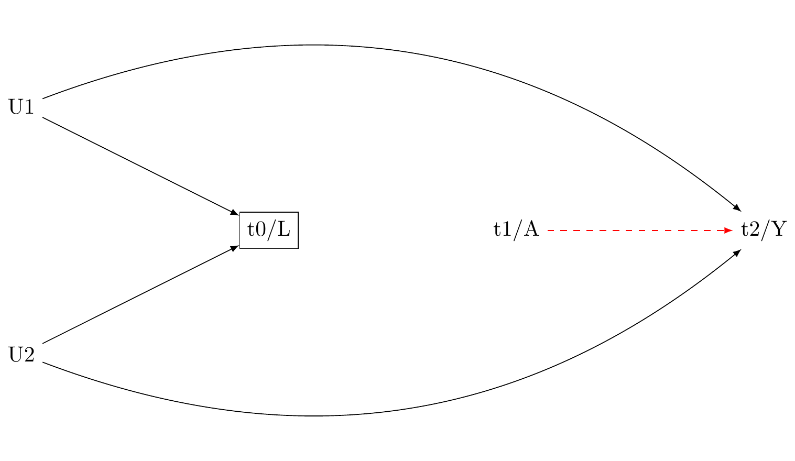
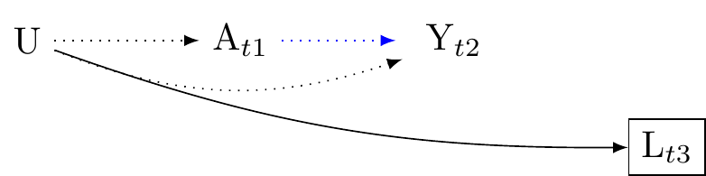
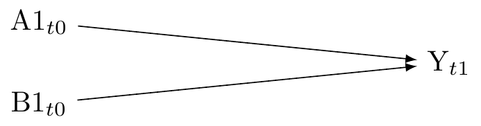

Common Causal Graphs
Elements of causal DAGs:
Nodes: These symbolize variables within a causal system. We denote nodes with letters such as
A, ~ Y
Edges or Vertices: These are arrows connecting nodes, signifying causal relationships. We denote edges with arrows:
A \to Y
Variable Naming Conventions
Outcome: typically denoted by Y. The effect or outcome of interest. Do not attempt to draw a causal DAG unless this outcome is clearly defined. Exposure or Treatment: typically denoted by A or X. The intervention. Do not attempt to draw a causal DAG unless the exposure is a clearly defined and does not violate deterministic non-positivity. Confounders: typically denoted by C or L. Informally the variables influencing both the exposure/treatment and the outcome. Or more formally: Unmeasured Confounders: typically denoted by U: Selection Variables: typically denoted by U: Variables affecting a unit’s inclusion in the study (including retention in the study). Box: denotes conditioning on a variable. For example, to denote selection into the study we write
\framebox{S}
To denote conditioning on a confounder set L we write
\framebox{L}
Key Concepts
- Markov Factorisation: Pertains to a causal DAG in which the joint distribution of all nodes can be expressed as a product of conditional distributions. Each variable is conditionally independent of its non-descendants, given its parents. This is crucial for identifying conditional independencies within the graph.
- D-separation (direction separation): Pertains to a condition in which there is no path between some sets of variables in the graph, given the conditioned variables. Establishing d-separation allows us to infer conditional independencies, which in turn help identify the set of measured variables we need to adjust for to obtain an unbiased estimate of the causal effect, or in the presence of unmeasured or partially measured confounders, to reduce bias.
Assumption of causal diagrammes
Causal Markov Condition
The Causal Markov Condition is an assumption that each variable is independent of its non-descendants, given its parents in the graph. In other words, it assumes that all dependencies between variables are mediated by direct causal relationships. If two variables are correlated, it must be because one causes the other, or they have a shared cause, not because of any unmeasured confounding variables.
Formally, for each variable X in the graph, X is independent of its non-descendants NonDesc(X), given its parents Pa(X).
This is strong assumption. Typically we must assume that there are hidden, unmeasured confounders that introduce dependencies between variables, which are not depicted in the graph. **It is important to (1) identify known unmeasured confounders and (2) label them on the the causal diagramme.
Faithfulness
The Faithfulness assumption is the inverse to the Causal Markov Condition. It states that if two variables are uncorrelated, it is because there is no direct or indirect causal path between them, not because of any cancelling out of effects. Essentially, it assumes that the relationships in your data are stable and consistent, and will not change if you intervene to change some of the variables.
Formally, if A and Y are independent given a set of variables L, then there does not exist a set of edges between A and Y that remains after conditioning on L.
As with the Causal Markov Condition, Faithfulness is a strong assumption, and it might not typically hold in the real world. There could be complex causal structures or interactions that lead to apparent independence between variables, even though they are causally related.
General Advice for drawing a causal DAG
- Define all variables clearly.
- Define any novel conventions you employ. This could include dotted or coloured arrows to indicate confounding that is induced, or unaddressed (as below)
- Adopt minimalism. Include only those nodes and edges that are needed to clarify the problem. Use diagrams only when they bring more clarity than textual descriptions alone.
- Chronological order. Where possible maintain temporal order of the nodes in the spatial order of the graph. Typically from left to right or top to bottom. When depicting repeated measures, index them using time subscripts:
- Add time-stamps to your nodes. To bring additoinal clarity, it is almost always useful to time-stamp the nodes of your graph, for example, in schematic form:
L_{t0} \rightarrow A_{t1} \rightarrow Y_{t2}
- Where exposures are not assigned randomly, we should nearly always assume unmeasured confounding. For this reason, your causal DAG should include a description of the sensitivity analyses you will perform to clarify the sensitivity of your findings to unmeasured confounding. Where there are known unmeasured confounders these should be described.
Recall that DAGs are qualitative representations. The stamps need not defined clearly defined units of time. Rather time stamps should preserve chronological order.
Elemental counfounds
There are four elemental confounds [@mcelreath2020 p.185]. Consider how chronological consciensciousness assists with understanding both constraints on data.
1. The problem of confounding by common cause
The problem of confounding by common cause arises when there is a variable denoted by L that influences both the exposure, denoted by A and the outcome variable, denoted by Y. Because L is a common cause of A and L is may create a statistical association between A and Y that does not reflect a causal association between A and Y. Put differently, although intervening on A might not affect Y, A and Y may be associated. For example, people who smoke may have yellow fingers. Smoking causes cancer. Because smoking (L) is a common cause of yellow fingers (A) and cancer (Y), A and Y will be associated. However, intervening to change the colour of people’s fingers would not affect cancer. The dashed red arrow in the graph indicate bias arising from the open backdoor path from A to Y that results from the common cause L.”
Advice: attend to the temporal order of cauasality
Confounding by a common cause can be addressed by adjusting for it. Typically we adjust through through statistical models such as regression, matching, or inverse probability of treatment weighting. Again, it is beyond the scope of this tutorial to describe causal estimation techniques. Figure Figure 2 clarifies that any confounding that is a cause of A and Y will precede A (and so Y), because causes precede effects. By indexing the the nodes on the graph, we can see that confounding control typically requires time-series data.

2. Confounding by collider stratification (conditioning on a common effect)
Conditioning on a common effect occurs when a variable L is affected by both the treatment A and an outcome Y.
Suppose A and Y are initially independent, such that A \coprod Y(a). Conditioning on the common effect L opens a backdoor path between A and Y, possibly inducing an association. This occurs because L gives information about the relationship of A and Y. Here’s an example:
Let A denote “exercise”. Let Y denote “heart disease”. Let L denote “weight”. Suppose, “exercise” and “heart disease” are not causally linked. However, they both affect “weight”, and if we condition on “weight” in a cross-sectional study, we might find a statistical association between “exercise” and “heart disease” even in the absence of causation.
We denote the observed associations as follows:
- P(A = 1): Probability of exercising
- P(Y = 1): Probability of having heart disease
- P(L = 1): Probability of being overweight
Without conditioning on L, we have:
P(A = 1, Y = 1) = P(A = 1)P(Y = 1)
However, if we condition on L (thecommon effect of both A and Y), we find:
P(A = 1, Y = 1 | L = 1) \neq P(A = 1 | L = 1)P(Y = 1 | L = 1)
The common effect L, once conditioned on, creates a non-causal association between A and Y. This can mislead us into believing there’s a direct link between exercise and heart disease, which is not the case. In the cross-sectional data, if we only observe A, Y, and L without understanding their causal relationship, we might erroneously conclude that there is a causal relationship between A and Y. This is the collider stratification bias.

Advice: attend to the temporal order of cauasality
To address the problem of conditioning on a common effect, we should generally ensure that all confounders L that are common causes of the exposure A and the outcome Y are measured before the occurance of the exposure A, and furthermore that the exposure A is measured before the occurance of the outcome Y. If such temporal order is preserved, L cannot be an effect of A, and thus neither of Y. By measuring all relevant confounders before the exposure, researchers can minimise the scope for collider confounding by conditioning on a common effect. This rule is not absolute. As indicated in Figure 9, it may be useful in certain circumstances to condition on a confounder that occurs after the outcome has occurred.

M-bias: conditioning on a collider that occurs before the exposure may introduce bias
Typically, confounders should be measured before their exposures. However, researchers should be cautious about conditioning on pre-exposure variable, as doing so can induce confounding. As shown in Figure 5, collider stratification may arise even if L occurs before A. This happens when L does not affect A or Y, but may be the descendent of a unmeasured variable that affects A and another unmeasured variable that also affects Y. Conditioning on L in this scenario elicits what is called “M-bias.” Note, however, that if L is not a common cause of A and Y, L should not be included in our model because it is not a source of confounding. Here, A \coprod Y(a) and A \cancel{\coprod} Y(a)| L. The solution: do not condition on the pre-exposure variable L.

3 The problem of conditioning on a mediator
Conditioning on a mediator occurs when L lies on the causal pathway between the treatment A and the outcome Y. Conditioning on L can lead to biased estimates by blocking or distorting the total effect of A and Y. Where L is a mediator, including L will typically attenuate the effect of A on Y. This scenario is presented in Figure 6. Where L is a collider between A and an unmeasured confouder U, then including L may increase the strength of association between A and Y. This scenario is presented in Figure 8.
In either case, unless one is interested in mediation analysis, conditioning on a post-treatment variable is nearly always a bad idea.

Advice: attend to the temporal order of cauasality
To address the problem of mediator bias, when interested in total effects do not condition on a mediator. This can be done by ensuring that L occurs before A (and Y). Again we discover the importance of an explicit temporal ordering for our variables. Although note, if L is associated with Y but is not associated with A conditioning on L will improve the efficiency of the causal effect estimate of A on Y. However, if A might affect L, then L might be a mediator, and including L risks bias. As with some much in causal estimation, we must understand the context.

4. Conditioning on a descendant
Say X is a cause of X\prime. If we condition on X we partially condition on X\prime.
There are both negative and positive implications for causal estimation in real-world scenarios.
First the negative. Suppose there is a confounder L that is caused by an unobserved variable U, and is affected by the treatment A. Suppose further that U causes the outcome Y. In this scenario, as described in Figure 8, conditioning on L, which is a descendant of A and U, can lead to a spurious association between A and Y through the path A \to L \to U \to Y.

Advice: attend to the temporal order of causality, and use expert knowledge of all relevant nodes.
Ensuring the confounder (L) is measured before the exposure (A) has two benefits.
First, if L is a confounder, that is, if L is a variable which if we fail to condition on it will bias the association between treatment and outcome, the strategy of including only pre-treatment indicators of L will reduce bias. Figure 9 presents this strategy

Secondly, note that we may use descendent to reduce bias. For example, if an unmeasured confounder U affects A, Y, and L\prime, then adjusting for L\prime may help to reduce confounding caused by U. This scenario is presented in Figure 10. Note that in this graph, L\prime may occur after the exposure, and indeed after the outcome. This shows that it would be wrong to infer that merely because causes preceed effects, we should only condition on confounders that preceed the exposure.

Causal Interaction?
Applied researchers will often be interested in testing interactions. What is causal interaction and how may we represent it on a causal diagramme?
We must distinguish the concept of causal interaction from the concept of effect modification.
Causal interaction as two independent exposures
Causal interaction is the effect of two exosures that may occur jointly or separately (or not occur). We say there is interaction on the scale of interest when the effect of one exposure on an outcome depends on the level of another exposure. For example, the effect of a drug (exposure A) on recovery time from a disease (outcome Y) might depend on whether or not the patient is also receiving physical therapy (exposure B). In terms of causal quantities, if we denote the potential outcomes under different exposure combinations as Y(a,b), a causal interaction on the difference scale would be present if Y(1,1) - Y(1,0) \neq Y(0,1) - Y(0,0).
When drawing a causal diagram, we represent the two exposures as separate nodes and draw edges from them to the outcome, as showin in Figure 11. This is because causal diagrams are non-parametric; they represent the qualitative aspects of causal relationships without making specific assumptions about the functional form of these relationships.

Effect measures for causal interaction
On the difference scale, the total causal effect of an exposure A on an outcome Y is typically quantified as Y(1) - Y(0), where Y(a) represents the potential outcome under exposure level a. If there is another exposure B, the causal interaction effect on the difference scale would be quantified as [Y(1,1) - Y(1,0)] - [Y(0,1) - Y(0,0)].
Note that causal effect of interactions might differ on the ratio scale. For instance, the total causal effect on the ratio scale would be Y(1) / Y(0), and the interaction effect would be [Y(1,1) / Y(1,0)] / [Y(0,1) / Y(0,0)].
Causal interaction as effect modification
Effect modification models the effect the magnitude of of a single exposure on an outcome across different levels of another variable.
Here we assume independence of the counterfactual outcome conditional on measured confounders, within strata of co-variate G:
Y(a) \coprod A | L, G
Note that there here, there is only one counterfactual outcome.

Advice for causal mediation
No unmeasured exposure-outcome confounders given L
This assumption is denoted by Y(a,m) \coprod A | L. It implies that when we control for the covariates L, there are no unmeasured confounders that influence both the exposure A and the outcome Y. For example, if we are studying the effect of a drug (exposure) on recovery time from a disease (outcome), and age and gender are our covariates L, this assumption would mean that there are no other factors, not accounted for in L, that influence both the decision to take the drug and the recovery time.
No unmeasured mediator-outcome confounders given L
This assumption is denoted by Y(a,m) \coprod M | L. It implies that when we control for the covariates L, there are no unmeasured confounders that influence both the mediator M and the outcome Y. For instance, if we are studying the effect of exercise (exposure) on weight loss (outcome) mediated by calorie intake (mediator), and age and gender are our covariates L, this assumption would mean that there are no other factors, not accounted for in L, that influence both the calorie intake and the weight loss.
No unmeasured exposure-mediator confounders given L
This assumption is denoted by M(a) \coprod A | L. It implies that when we control for the covariates L, there are no unmeasured confounders that influence both the exposure A and the mediator M. Using the previous example, this assumption would mean that there are no other factors, not accounted for in L, that influence both the decision to exercise and the calorie intake.
No mediator-outcome confounder affected by the exposure (no red arrow)
This assumption is denoted by Y(a,m) \coprod M^{a*} | L. It implies that there are no variables that confound the relationship between the mediator and the outcome that are affected by the exposure. For example, if we are studying the effect of education (exposure) on income (outcome) mediated by job type (mediator), this assumption would mean that there are no factors that influence both job type and income that are affected by the level of education.
These assumptions are fundamental for the identification of causal mediation effects. If these assumptions are violated, the estimates of the mediation effect can be biased. Importantly, these assumptions cannot be fully tested with observed data. They require substantive knowledge about the underlying causal process. Note that when assumption 4 is violated, natural direct and indirect effects are not identified in the data. [Cite Tyler here]

Advice for modelling repeated exposures in longitudinal data (confounder-treatment feedback)?
Causal mediation is a special case in which we have multiple sequential exposures.
For example, consider temporally fixed multiple exposures. The counterfactual outcomes may be denoted Y(a_{t1} ,a_{t2}). There are four counterfactual outcomes corresponding to the four fixed “treatment regimes”:
Always treat (Y(1,1)): This regime involves providing the treatment at every opportunity.
Never treat (Y(0,0)): This regime involves abstaining from providing the treatment at any opportunity.
Treat once first (Y(1,0)): This regime involves providing the treatment only at the first opportunity and not at subsequent one.
Treat once second (Y(0,1)): This regime involves abstaining from providing the treatment at the first opportunity, but then providing it at the second one.
There are six causal contrasts that we might compute.1
- Always treat vs. Never treat
- Always treat vs. Treat once first
- Always treat vs. Treat once second
- Never treat vs. Treat once first
- Never treat vs. Treat once second
- Treat once first vs. Treat once second
We might also consider treatment to be a function of the previous outcome. For example, we might Treat once first and then treat again or do not treat again depending on the outcome of the previous treatment. This is called “time-varying treatment regimes.”
Note that to estimate the “effect” of a treatment regime, we must compare the counterfactual quantities of interest. The same conditions that apply for causal identification in mediation analysis apply to causal idenification in multiple treatment settings. And notice, just as mediation opens the possibility of time-varying confounding (condition 4, in which the exposure effects the confounders of the mediator/outcome path), so too we find that with time-varying treatments comes the problem of time-varying confounding. Unlike traditional causal mediation analysis, the sequence of treatement regimes that we might consider is indefinitely long.
Temporally organised causal diagrammes help us to discover the problems with traditional multi-level regression analysis and structural equation modelling. Suppose we are interested in the question of whether beliefs in big Gods affect social complexity.
First consider fixed regimes Suppose we have well-defined concept of social complexity and excellent measurements over time. Suppose we want to compare the effects of beliefs on big Gods on Social complexity using historical data measured over two centuries. Our question is whether the introduction and persistence of such beliefs differs from having no such beliefs. The treatment strategies are: “always believe in big Gods” versus “never believe in big Gods” on the level of social complexity. The a causal diagram illustrates two time points in our study the study.
Here, A_{tx} represents the cultural belief in “big Gods” at time x, and Y_{tx} is the outcome, social complexity, at time x. Economic trade, denoted as L_{tx}, is a time-varying confounder because it varies over time and confounds the effect of A on Y at several time points x. To complete our causal diagramme we include an unmeasured confounder U, such as geographical constraints, which might influence both the belief in “big Gods” and social complexity.
We know that the level of economic trade at time 0, L_{t0}, influences the belief in “big Gods” at time 1, A_{t1}. We therefore draw an arrow from L_{t0} to A_{t1}. But we also know that the belief in “big Gods”, A_{t1}, affects the future level of economic trade, L_{t(2)}. This means that we need to add an arrow from A_{t1} to L_{t(2)}. This causal graph represents a feedback process between the time-varying exposure A and the time-varying confounder L. This is the simplest graph with exposure-confounder feedback. In real world setting there could be arrows. However, our DAG however need show the minimum number of arrows to exhibit the problem of exposure-confounder feedback.
What happens if we condition on the time-varying confounder L_{t3}. Two things occur. First, we block all the backdoor paths between the exposure A_{t2} and the outcome. We need to block those paths to eliminate confounding. Therefore, condition on the time-varying confounding would appear to be essential. Second, paths that were previously blocked are now open. For example, the path A_{t1}, L_{t2}, U, Y_{t(4)}, which was previous closed is opened because the time varying confounder is the common effect of A_{t1} and U. Conditioning opens the path A_{t1}, L_{t2}, U, Y_{3}. The same problem occurs if the time-varying exposure and time-varying confounder share a common cause (without the exposure affecting the confounder). And the problem is only more entrenched when the exposures A_{t1} affects the outcome Y_{t4}. Because L_{t2} is along the path from A_{t1} to Y_{t4} conditioning on L_{t2} partially blocks the path between the exposure and the outcome. Conditioning on L_{t2} in this setting induces both collider stratification bias and mediator bias. Yet we must conditoin on L_{t2} to block the open backdoor path between L_{t2} and Y_{t4}. The general problem of xposure-confounder feedback is described in detail in [@hernan2023]. This problem presents a serious issue for cultural evolutionary studies. The bad news is that nearly traditional regresion based methods cannot address this problem. The good new is that

More about SWIGS…
Footnotes
We may compute the combination of contrasts by C(n, r) = \frac{n!}{(n-r)! \cdot r!}↩︎
Reuse
MIT